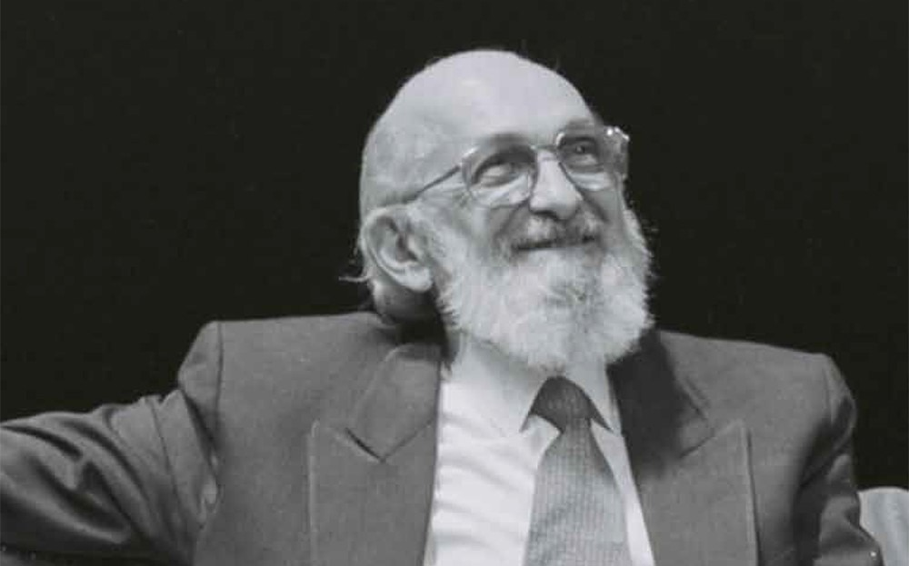
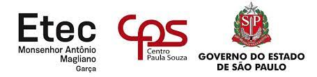

Semana Paulo Freire
Etecs promovem atividades na Semana Paulo Freire

Maio é o mês em que as Escolas Técnicas Estaduais (Etecs) promovem uma programação especial em homenagem a Paulo Freire, o patrono da educação brasileira.
Neste ano, a celebração é ainda maior porque o educador faria 100 anos. As Etecs organizaram uma série de eventos e atividades como forma de promover discussões e disseminação
de conhecimentos sobre a obra e o legado do filósofo pernambucano.
A Etec Padre Carlos Leôncio da Silva, de Lorena, apresentou no dia 5 a live Educação e Pandemia, que foi transmitida pela plataforma do YouTube. O evento teve a participação da
blogueira e bióloga Isa Bertoleti e do professor e jornalista Miguel Júnior.
Outra proposta, feita pela Etec João Belarmino, de Amparo, será dedicada a apresentar aos alunos a vida e a obra de Paulo Freire. De 17 a 21 de maio, serão exibidos documentários,
vídeos e discussões sobre o trabalho do educador.
Em Assis, a Etec Pedro D’Arcádia Neto fará, no dia 29, uma roda de conversa, transmitida pela Plataforma Teams, com o tema “Paulo Freire: Presente!”.
